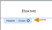
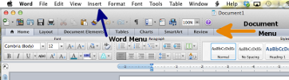

Formatting an MLA Template
Basic Settings
- In Font section change 'Font' to "Times New Roman"
- In Font section set 'Font Size' to "12"
- In Paragraph section set 'Line Spacing' to "2.0"

Formatting the Title Page
- In Paragraph section click "Align Text Left" button
- Type your name, press Enter
- Type your professor's name, press Enter
- Type the class name and section, press Enter
- Type "DD Month YYYY", press Enter
Create Header Template
- Click "Document Elements" in the Document menu
- Click "Header" and choose "Basic (All Pages)"
- Tap left "Type Text" to highlight and Delete
- Tap middle "Type Text" to highlight and Delete
- Tap right "Type Text" to highlight, type your last name
- In the "Document Elements" menu click "Page #"
- In Alignment dropdown menu of popup window choose "Right", click "OK"
- Click "Close" to close the Header and Footer sections

Document and Word menu locations:
